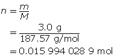
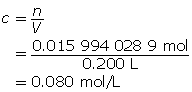
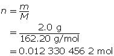

Module 4—Properties of Solutions
 Read
Read
In Lesson 4 you learned to express concentration as % V/V, % W/V, % W/W, in parts per million, and in parts per billion. While labels like percentage weight per volume are great for consumer products, and parts per million is often used for environmental work, chemists in a lab typically express concentration using another set of units. In a previous science course you learned about the mole, the chemical quantity used to express matter. Do you remember what a “mole” is? Later, in Modules 5 and 6, you will see that expressing quantities of substances using moles is favoured because these values can be used to predict quantities of other substances involved in a chemical reaction.
To review your understanding of the mole, read page 51 in your textbook.
In this lesson you will learn how to calculate amount concentration. You will also learn how amount concentration can be applied to a wide variety of situations, such as dilution and solution preparation in a lab.
Amount Concentration
Amount concentration expresses the solute in number of moles and the volume in litres. In many cases, you will have to convert a given mass into a number of moles before finding the amount concentration.

Use this formula to find the number of moles.
n = number of moles (mol)
m = mass (g)
M = molar mass (g/mol)
Use this formula to find the amount concentration.
c = amount concentration (mol/L)
n = number of moles (mol)
V = volume (L)
Read "Amount Concentration" on page 205 in your textbook and work through “COMMUNICATION example 4.” Carefully work through the additional example below.
Example 1: Determine the amount concentration of 0.42 mol of magnesium sulfate dissolved in a 200-mL solution.


Example 2: Determine the amount concentration of 3.0 g of copper(II) nitrate dissolved in a 200-mL solution.

First, determine the number of moles of solute.

Now, calculate the amount concentration.

The amount concentration of the copper(II) nitrate solution is 0.080 mol/L.
 Self-Check
Self-Check
SC 1. Determine the amount concentration of 6.3 mol of magnesium sulfate dissolved in 5.4 L of solution.
SC 2. Determine the amount concentration of 2.0 g of iron(III) chloride dissolved in 50 mL of solution.
SC 3. Determine the amount concentration of 150 mg of sodium chloride dissolved in 47.0 mL of solution.
Self-Check Answers
SC 1.
The amount concentration of the magnesium sulfate solution is 1.2 mol/L.
SC 2.

Now, calculate the amount concentration.

The amount concentration of the iron(III) chloride solution is 0.25 mol/L.
SC 3.

First, determine the number of moles of solute.

Now, calculate the amount concentration.

The amount concentration of the sodium chloride solution is 0.0546 mol/L.